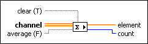

Read Details
Related Information
Example
Refer to the Channel - Accumulator Tag.lvproj in the labview\examples\Channels\Accumulator Tag directory for an example of using the Read endpoint.
 Open example
Open example  Find related examples
Find related examples
Requires: Base Development System
Reads the sum of values from an Accumulator Tag channel and optionally clears the value after the endpoint retrieves the current sum.
You can drop this endpoint on the block diagram by right-clicking an Accumulator Tag channel terminal or wire and selecting Create»Channel Reader»Accumulator Tag»Read.

Refer to the Channel - Accumulator Tag.lvproj in the labview\examples\Channels\Accumulator Tag directory for an example of using the Read endpoint.
Open example Find related examples